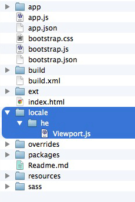

Ext JS has an extensive locale library with support for over 40 languages from around the world. Some of these languages are read from right to left. This makes right-to-left (RTL) support a must. Combining Ext JS’s localization package with RTL support gives your application a voice for the entire globe.
In this guide, we will walk through enabling RTL support for your application.
Note: To enable localization in your application, please check out the Ext JS locale guide.
RTL with Sencha Cmd
Let’s start by generating an application using Sencha Cmd. Simply open your terminal and issue the following commands:
sencha generate app -ext MyApp ./app
cd app
sencha app watchNote: If you are not familiar with what is happening above, please check out our 快速入门 guide.
Enabling RTL
It’s incredibly simple to enable RTL in your Cmd generated app. All you need to do is require Ext.rtl.* and set rtl: true.
Ext.define('MyApp.view.main.Main', {
extend: 'Ext.container.Container',
requires: [
'Ext.rtl.*'
],
rtl: true,
...In the case of our generated application, you would add the above code to your Main.js. This can be found in your app/view/main folder. This is the designated Viewport in this instance. If you are not using the generated application, you may also add it to your top level container or Viewport.
Upon adding the above code snippet, you can then rebuild your application:
sencha app buildOnce you refresh your application, you should see that your page elements are flipped horizontally and your text is written from right to left.
All children of your top level container with rtl: true will inherit the same functionality. You may indicate rtl:false on a child element to disable RTL for that particular piece of your application.
Locales with RTL
Using locales with RTL, such as Hebrew, will flip your application to RTL by default in the near future. However, at this time, that functionality is tied to Viewport and is not activated when using mainView with a container other than Ext.container.Viewport.
In this case, you can enable RTL for your application as mentioned above.
However, you may not want to hardcode RTL support into your application if you are incorporating multiple locales. In this case, you would need to add a locale override for the language in your application’s root directory.
RTL Locale Override
In this section, we will discuss adding an override for the Hebrew locale. This same logic will apply for any other locale needing an override for dynamic RTL support. You would simply replace the “he” with your locale’s abbreviation.
Create a folder named “locale” in the root of your application. This would appear at the same level as the app, build, ext, etc.
Add a folder with your locale’s abbreviation inside of the locale folder. In this case, we will create a folder called “he”.
Create a file called
Viewport.jsinside of your “he” folder. The resulting file structure should look similar to this:
You can then add the following override to your
Viewport.jsoverride file:Ext.define('MyApp.locale.he.Viewport', { override: 'Ext.plugin.Viewport', requires: 'Ext.rtl.*', setCmp: function (cmp) { this.callParent([cmp]); cmp.rtl = true; } })Now that your override is in place you’ll need to alert
app.jsonto its presence so that Cmd recognizes the override and compiles it within your next build. Add the following line to yourapp.jsonfile:"overrides": "${app.dir}/overrides,${app.dir}/locale/${app.locale},
This will tell Cmd that it should utilize any file located within your application’s overrides and locale folder.
With this override in place, you should be better equipped to generate an application that supports multiple locales without having to hardcode RTL support into your parent container.
RTL without Sencha Cmd
While we encourage users to utilize the powerful tools within Sencha Cmd, we recognize that some folks are not able to use Sencha Cmd. This portion of the guide will walk you through setting up RTL support without using Sencha Cmd.
Update your
index.htmlfile to point to your particular flavor of RTL framework file, included with all Ext JS framework downloads after Ext JS 4.2.0. For example:build/ext-all-rtl-debug.js build/ext-all-rtl.jsThis will modify your application to load the RTL-specific library.
Update your index.html file to point to your selected theme’s RTL CSS file, included with all Ext JS framework downloads after Ext JS 4.2.0. The default location for these live here:
build/packages/ext-theme-{themename}/build/resources/ext-theme-{themename}-all-rtl.cssLastly, add
rtl: trueto your Viewport
This is a sample index.html file using Neptune with RTL support enabled:
<!DOCTYPE html>
<html>
<head>
<title>Hello RTL</title>
<link rel="stylesheet" type="text/css" href="build/packages/ext-theme-neptune/build/resources/ext-theme-neptune-all-rtl.css">
<script type="text/javascript" src="/releases/extjs/5.0.0/build/ext-all-rtl.js"></script>
<script type="text/javascript" src="build/packages/ext-theme-neptune/build/ext-theme-neptune.js"></script>
<script>
Ext.application({
name: 'MyApp',
launch: function() {
Ext.create('Ext.container.Viewport', {
renderTo: Ext.getBody(),
rtl : true,
html: "hello I am a bunch of text"
});
}
});
</script>
</head>
<body>
</body>
</html>Note: Make sure to include the Theme override JS file as seen above